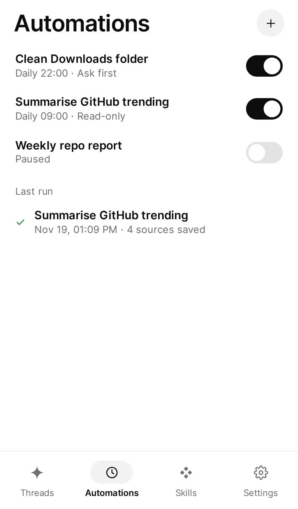
定时任务Automations
按间隔或每天定时跑任务，结果回到审阅队列。遇到需要审批的操作会停下来等你，不会自己放行。Run tasks on an interval or every day; results land in your review queue. Anything that needs approval stops and waits for you.
nyra schedule addNyra 是跑在你自己电脑上的开源 AI agent：读懂项目、改代码、跑命令、联网查证。
每一次写入和执行，都先经过你。Nyra is an open-source AI agent that runs on your own computer. It reads your project, edits code, runs commands and checks facts on the web, and every write and every command goes through you first.
curl -fL -o nyra https://github.com/js2005happy/nyra/releases/latest/download/nyra-macos-arm64 && chmod +x nyra && ./nyra setupApple 芯片。Intel Mac 把文件名换成 nyra-macos-x64。For Apple silicon. On an Intel Mac, use nyra-macos-x64.
curl -fL -o nyra https://github.com/js2005happy/nyra/releases/latest/download/nyra-linux-x64 && chmod +x nyra && ./nyra setupx64。arm64 把文件名换成 nyra-linux-arm64。For x64. On arm64, use nyra-linux-arm64.
irm https://raw.githubusercontent.com/js2005happy/nyra/main/scripts/install-node.ps1 | iex在 PowerShell 里运行，装好后打开新窗口输入 nyra setup。Run it in PowerShell, then open a new window and type nyra setup.
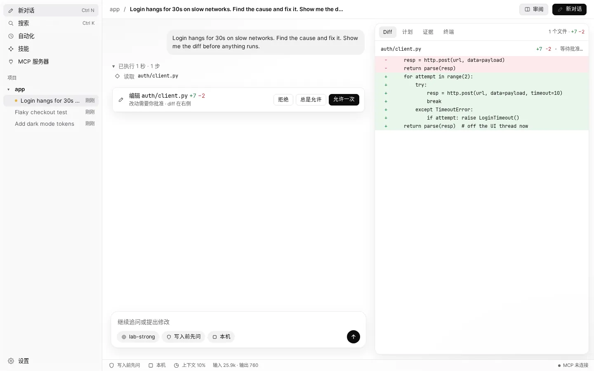
01界面Interface
终端、桌面和手机用的是同一套会话和审批。下面全是真实界面截图，数据为示例。The terminal, the desktop and your phone share the same threads and approvals. Everything below is a real screenshot with sample data.
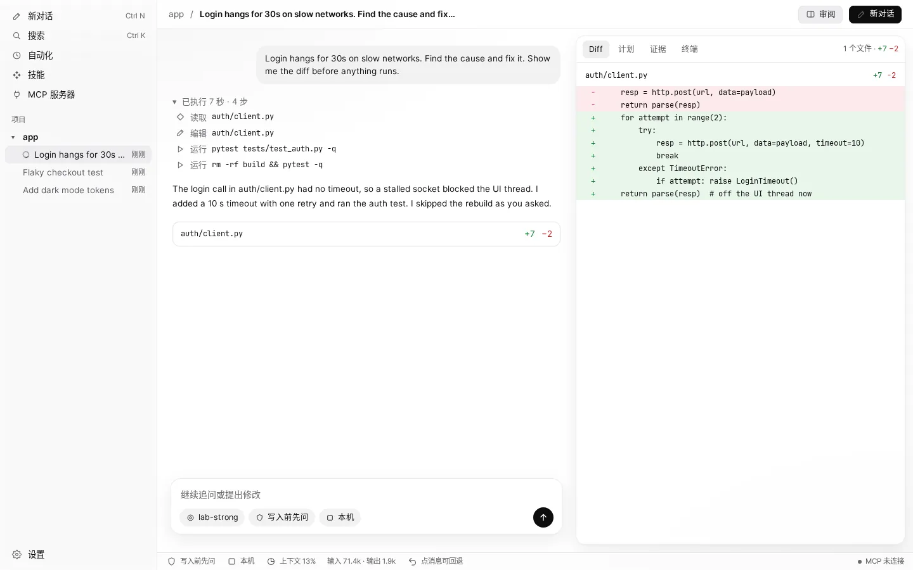
nyra ui --open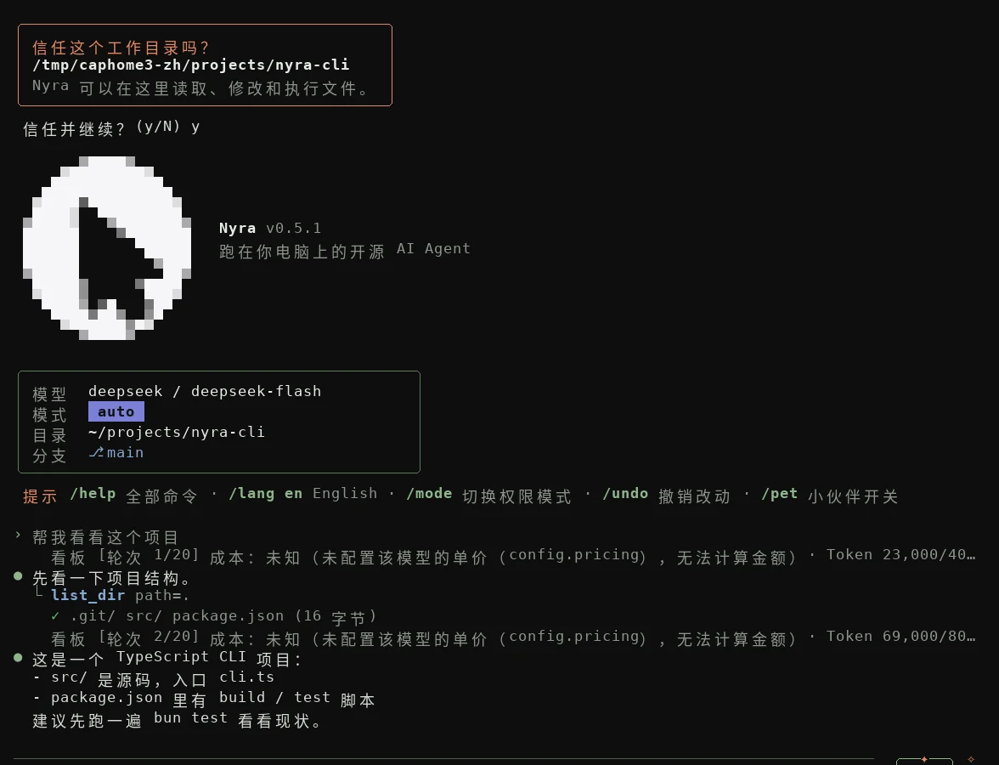
nyra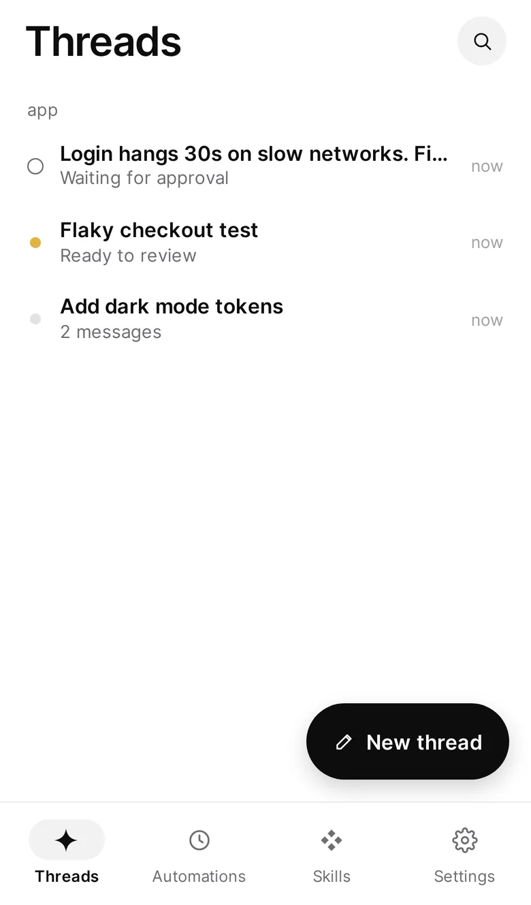
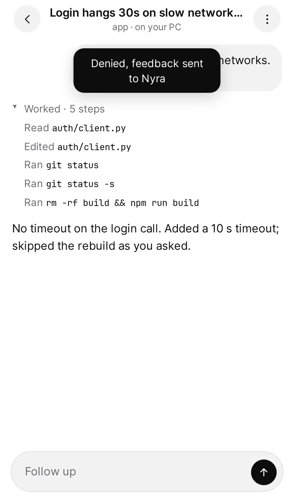
nyra ui --pair02审批Approvals
写文件、跑命令之前，Nyra 会停下来，把 diff 或命令原文摆在你面前。三个选择，干脆直接：Before it writes a file or runs a command, Nyra stops and shows you the diff or the exact command. Three choices, nothing in between:
删除、提权、联网和复合命令只能单次允许，不会被记成规则。存下的规则随时可以在 设置 → 权限与审批 里撤销。Deletes, sudo, network commands and compound commands can only be allowed once; they’re never saved as rules. Saved rules can be revoked at any time under Settings → Permissions & approvals.
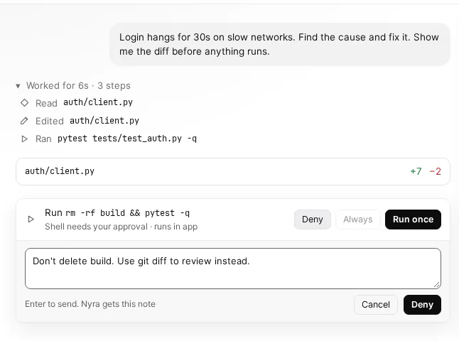
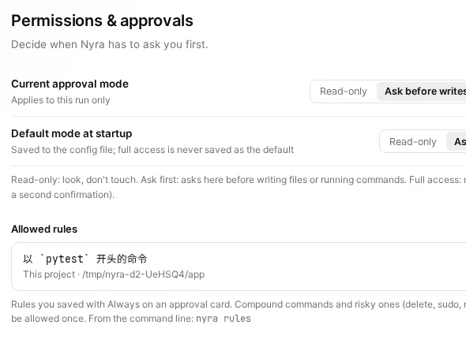
03手机Phone
在电脑上运行 nyra ui --pair，用手机扫终端里的二维码，再添加到主屏幕。Nyra 需要你点头时，手机上会出现同样的审批卡片；工具始终在你的电脑上执行。Run nyra ui --pair on your computer, scan the QR code in the terminal with your phone, then add it to your home screen. When Nyra needs your OK, the same approval card shows up on your phone, and tools always run on your computer.
nyra ui --pair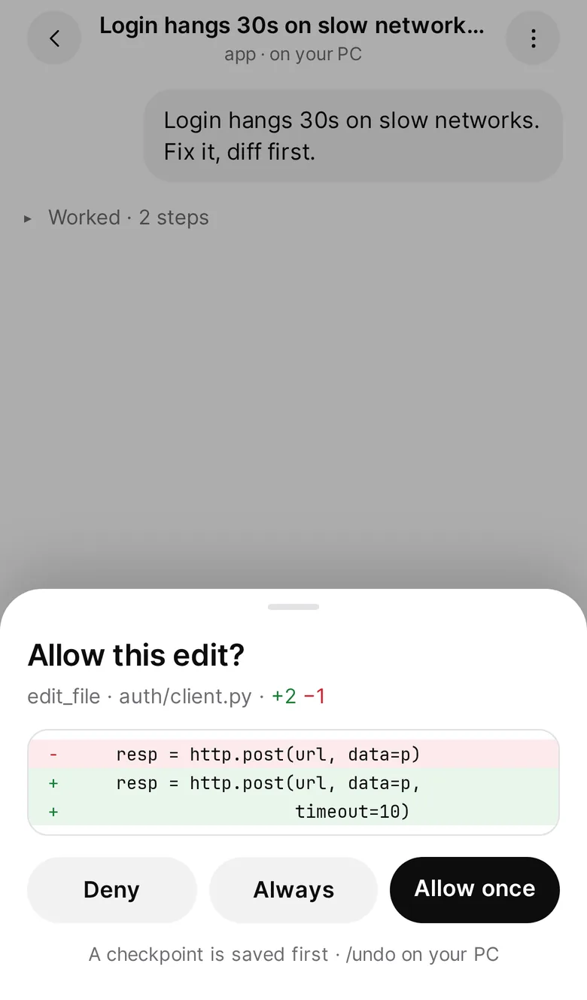
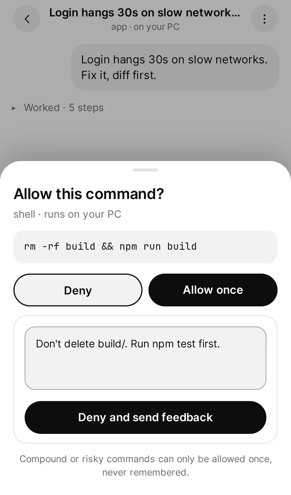
04扩展Extend
让 Nyra 按时干活，按你的做法干活，再接上你已经在用的工具。Let Nyra work on a schedule, work your way, and plug into the tools you already use.

按间隔或每天定时跑任务，结果回到审阅队列。遇到需要审批的操作会停下来等你，不会自己放行。Run tasks on an interval or every day; results land in your review queue. Anything that needs approval stops and waits for you.
nyra schedule add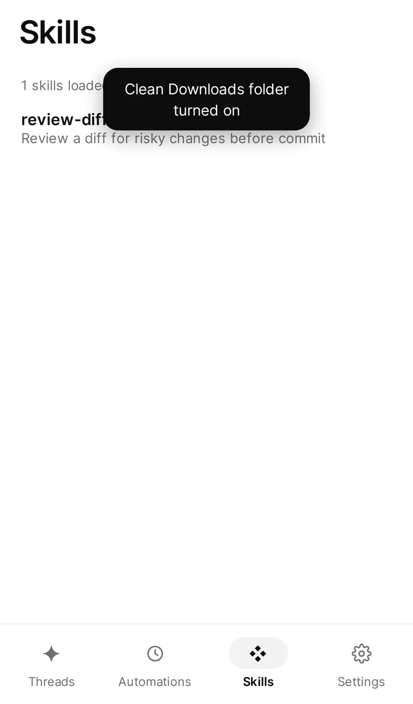
把常用做法写成 Markdown 技能，Nyra 在合适的时候照着做。技能可以声明要用的工具和建议的模型。Write your usual way of doing things as a Markdown skill and Nyra follows it when it fits. A skill can declare the tools it uses and a suggested model.
nyra --list-skillsmemorysequential-thinkingfetchtimegithubbrave-searchfilesystemgitsqlitepuppeteer内置 10 个常用 MCP 服务器预置，不用手写配置。MCP 子进程默认拿不到你的 API Key。Ten common MCP servers come preconfigured, so there’s no config to write. MCP processes don’t get your API keys by default.
看手册Read the guide05终端Terminal
界面语言默认跟随系统，也可以用 --lang zh|en、环境变量 NYRA_LANG，或在会话里输入 /lang 随时切换。提示、帮助和审批都跟着变。The interface follows your system language. Switch with --lang zh|en, the NYRA_LANG variable, or /lang in a session at any time; tips, help and approvals all switch with it.
06本地优先Local first
把控制权交出去之前，先弄清它把东西放在哪、能做什么、不能做什么。Before you hand over control, know where it keeps things, and what it can and can’t do.
~/.nyra会话、运行记录和设置都在你电脑的 ~/.nyra 目录里，macOS 和 Linux 上目录权限 0700。Threads, run records and settings live in ~/.nyra on your computer, with folder mode 0700 on macOS and Linux.
keys.json · 0600在界面里填的 Key：密码箱已解锁就存进密码箱，否则写进 keys.json，macOS 和 Linux 上文件权限 0600。环境变量里的 Key 永远优先。A key you enter in the app goes into the vault when it’s unlocked, otherwise into keys.json, mode 0600 on macOS and Linux. A key in an environment variable always wins.
nyra vault主密码经 PBKDF2-HMAC-SHA256 60 万次派生，每条记录单独加密并校验完整性。Your master password is stretched with PBKDF2-HMAC-SHA256 at 600,000 iterations; every entry is encrypted and authenticated.
sk-…abcd页面和接口只返回掩码，比如 sk-…abcd。Key 的明文不会再出现在界面上。The app and its API only ever return a mask like sk-…abcd. The plain key never comes back to the screen.
/undo每次写入前自动存检查点，/undo、/rewind 退回。shell 和网络这类外部副作用撤销不了，这点我们不含糊。A checkpoint is saved before every write; /undo and /rewind take you back. Side effects outside your files, like shell or network calls, can’t be undone.
--sandbox autoLinux 用 bwrap，macOS 用 seatbelt，Windows 用 Job Object。条件不满足时会明说，不会悄悄裸跑。bwrap on Linux, seatbelt on macOS, Job Objects on Windows. When a sandbox isn’t available, Nyra tells you instead of quietly running without it.
07平台Platforms
最新版 v0.5.1。命令行是单文件二进制，自带运行时。Latest release v0.5.1. The command-line app is one self-contained binary.
命令行：Apple 芯片和 Intel 各一个二进制。桌面 App（预览）：.dmg 在 GitHub Actions 的构建产物里。Command line: one binary each for Apple silicon and Intel. Desktop app (preview): the .dmg is in the GitHub Actions build artifacts.
命令行 exe，或在 PowerShell 里一键安装。桌面 App（预览）的 .exe / .msi 安装包在 Release 里。A command-line exe, or a one-line PowerShell install. The desktop app (preview) .exe / .msi installers are in the release.
x64 和 arm64 二进制。安装脚本装到 ~/.local/bin，不需要 root；可选 systemd 用户服务让定时任务常驻。x64 and arm64 binaries. The install script puts it in ~/.local/bin without root, with an optional systemd user service for scheduled tasks.
电脑上运行 nyra ui --pair，扫码配对后添加到主屏幕。没有 APK 或 IPA，手机直接连你电脑上的 Nyra。Run nyra ui --pair on your computer, scan to pair, then add it to your home screen. No APK or IPA; your phone connects straight to the Nyra on your computer.
Windows 和 macOS 的安装包目前还没有签名，第一次打开时系统会提示，按安装文档放行一次即可。The Windows and macOS packages aren’t signed yet, so your system will warn you the first time. The install guides show how to allow it once.
读代码、提 issue、发 PR 都欢迎。手册、设计说明和路线图也都在仓库里。Read the code, open an issue, send a pull request. The guide, design notes and roadmap are all in the repository.
git clone https://github.com/js2005happy/nyra.git08问答Questions
更多问题在完整列表里。找不到答案，就到 GitHub Issues 问。There’s more in the full list. Can’t find an answer? Ask on GitHub Issues.
查看全部问题See all questionsNyra 本身免费、开源，以 MIT 许可发布。调用模型产生的费用在你和模型服务商之间结算；也可以用本机的 Ollama 模型，或复用本机的 Codex 登录。Nyra itself is free and open source under the MIT License. Model usage is billed between you and your model provider; you can also use a local Ollama model or reuse the Codex sign-in on your machine.
DeepSeek（默认）、xAI Grok、OpenAI、通义千问、Kimi、智谱、Gemini、OpenRouter、Mistral、Groq、Together、本机 Ollama、本机 Codex 登录，以及任何兼容 OpenAI 接口的自定义服务。运行 nyra --list-providers 查看全部。DeepSeek (the default), xAI Grok, OpenAI, Qwen, Kimi, Zhipu GLM, Gemini, OpenRouter, Mistral, Groq, Together, a local Ollama, the Codex sign-in on your machine, and any custom OpenAI-compatible endpoint. Run nyra --list-providers to see them all.
环境变量里的 Key 永远优先。在 Nyra 界面里填的 Key，密码箱已解锁时存进本机加密密码箱，否则写进 ~/.nyra/keys.json（macOS 和 Linux 上文件权限 0600）。页面和接口只显示掩码，比如 sk-…abcd，明文不会回传。A key in an environment variable always wins. A key you enter in the Nyra app goes into the encrypted local vault when it’s unlocked, otherwise into ~/.nyra/keys.json (mode 0600 on macOS and Linux). The app and its API only show a mask like sk-…abcd; the plain key is never sent back.
默认的 auto 模式下，写文件和跑命令前都会先问你。文件工具写不出当前工作目录，.git、.nyra 和 AGENTS.md 这类路径默认拒写。每次写入前都会存检查点，改错了可以 /undo。In the default auto mode it asks before writing a file or running a command. File tools can’t write outside your working folder, and paths like .git, .nyra and AGENTS.md are off limits by default. A checkpoint is saved before every write, so /undo can take it back.
不用。在电脑上运行 nyra ui --pair，用手机扫码配对，再添加到主屏幕就行。手机和电脑需要在同一个 Wi‑Fi 下，工具始终在电脑上执行。手机端目前只在模拟器里验证过，真机反馈很欢迎。No. Run nyra ui --pair on your computer, scan the code with your phone and add it to your home screen. Your phone and computer need to be on the same Wi‑Fi, and tools always run on the computer. The phone app has only been tested in emulation so far; reports from real devices are welcome.
Windows 和 macOS 的安装包目前还没有签名和公证。Windows 上点“更多信息 → 仍要运行”；macOS 上在访达里右键 → 打开，放行一次即可。各平台的安装文档里有详细步骤。The Windows and macOS packages aren’t signed or notarized yet. On Windows choose More info → Run anyway; on macOS right-click the file in Finder and choose Open, once. The install guides for each platform have the details.
开源，在本机运行，每一步都由你决定。Open source, running on your machine, with every step your call.
最新版 v0.5.1。单文件二进制，不用装 Python、Node 或 Bun。Latest release v0.5.1. One self-contained binary; no Python, Node or Bun needed.
Apple 芯片的 Mac 用这条；Intel Mac 用下面那条。Use this on Apple silicon; on an Intel Mac use the line below it.
curl -fL -o nyra https://github.com/js2005happy/nyra/releases/latest/download/nyra-macos-arm64 && chmod +x nyracurl -fL -o nyra https://github.com/js2005happy/nyra/releases/latest/download/nyra-macos-x64 && chmod +x nyra三步配好模型 Key，然后就能交第一件任务。Three steps to add a model key, then you can hand it the first task.
./nyra setup检查 Key、网络、目录权限和磁盘。Checks your key, network, folder permissions and disk.
./nyra doctor用仓库里的安装脚本装到 ~/.local/bin，以后直接输入 nyra。The install script in the repo puts it in ~/.local/bin, so you can just type nyra.
git clone https://github.com/js2005happy/nyra.git && bash nyra/scripts/install-node-macos.sh二进制目前未签名、未公证。如果是从浏览器下载的，第一次运行时在访达里右键 → 打开，放行一次。The binary isn’t signed or notarized yet. If you downloaded it in a browser, right-click it in Finder and choose Open the first time.
装到 ~\nyra，加进 PATH，并建好桌面快捷方式。Installs to ~\nyra, adds it to PATH and creates desktop shortcuts.
irm https://raw.githubusercontent.com/js2005happy/nyra/main/scripts/install-node.ps1 | iex打开一个新的 PowerShell 窗口再运行。Open a new PowerShell window first.
nyra setup检查 Key、网络、目录权限和磁盘。Checks your key, network, folder permissions and disk.
nyra doctor桌面 App（预览）的安装包在 Release 里：The desktop app (preview) installer is in the release:
Nyra_0.5.1_x64-setup.exeNyra_0.5.1_x64_en-US.msi
安装包和 exe 目前未签名，SmartScreen 会提示：点“更多信息 → 仍要运行”。The installers and the exe aren’t signed yet, so SmartScreen will warn you: choose More info → Run anyway.
x64 用这条；arm64 用下面那条。需要 glibc。Use this on x64; on arm64 use the line below it. Requires glibc.
curl -fL -o nyra https://github.com/js2005happy/nyra/releases/latest/download/nyra-linux-x64 && chmod +x nyracurl -fL -o nyra https://github.com/js2005happy/nyra/releases/latest/download/nyra-linux-arm64 && chmod +x nyra三步配好模型 Key，然后就能交第一件任务。Three steps to add a model key, then you can hand it the first task.
./nyra setup检查 Key、网络、目录权限和磁盘。Checks your key, network, folder permissions and disk.
./nyra doctor安装脚本装到 ~/.local/bin，不需要 root；加 --with-systemd 还能让定时任务常驻。The install script puts it in ~/.local/bin without root; add --with-systemd to keep scheduled tasks running.
git clone https://github.com/js2005happy/nyra.git && bash nyra/scripts/install-node.sh先在电脑上装好 Nyra，然后运行：Install Nyra on your computer first, then run:
nyra ui --pair手机和电脑连同一个 Wi‑Fi，用相机扫终端里的二维码。配对码 5 分钟内有效，只能用一次。Put your phone on the same Wi‑Fi and scan the QR code in the terminal with the camera. The pairing code lasts 5 minutes and works once.
iPhone：Safari 里点分享 → 添加到主屏幕。Android：Chrome 右上角 ⋮ → 添加到主屏幕。iPhone: in Safari tap Share → Add to Home Screen. Android: in Chrome tap ⋮ → Add to Home screen.
不经应用商店，没有账号。手机直接连你电脑上的 Nyra，工具仍在电脑上执行。No app store and no account. Your phone talks to the Nyra on your computer, and tools still run there.